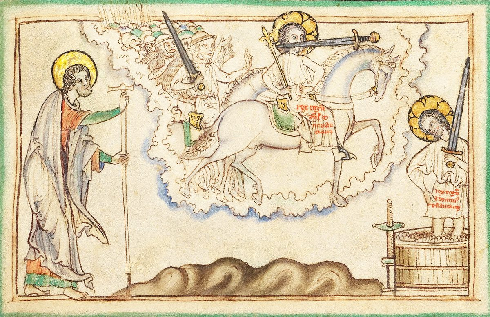

Revelation 19 — The Mister Translation

⚠ An English Apocalypse of the 1250s draws verses 11–16 as two scenes: the rider called Faithful and True leading the armies of heaven out of the cloud, and the same figure treading the winepress. The painter shows the sword from his mouth literally, as a blade passing through it, and writes the name on his robe in Latin, rex regum et dominus dominantium, ‘King of kings and Lord of lords.’

Translator’s Notes
⚠ “After these things I heard something like a loud voice of a great multitude in heaven, saying, ‘Hallelujah! Salvation and glory and power belong to our God, because true and righteous are his judgments; because he has judged the great prostitute who corrupted the earth with her sexual immorality, and he has avenged the blood of his slaves at her hand.’” “Hallelujah” is a Hebrew word spelled in Greek letters: hallelu-yah, “praise Jah,” Jah being the short form of the name Jehovah. In the Hebrew Bible it opens and closes psalms from Psalm 104 to Psalm 150. Hallēlouia stands in four verses of the New Testament, all of them in this chapter (dictionary). “Salvation belongs to our God” was the multitude’s cry at Revelation 7:10, and “true and righteous are your judgments” the altar’s at 16:7. “Avenged the blood of his slaves” answers the souls under the altar (6:10) and the Song of Moses, “he will avenge the blood of his servants” (Deuteronomy 32:43). The Byzantine text reads “power and glory,” and for “corrupted” it has the verb of “destroy those who destroy the earth” (11:18). The NWT 1984 translates the word instead of spelling it, “Praise Jah, YOU people!”; the KJV reads “Alleluia; Salvation, and glory, and honour, and power, unto the Lord our God,” with “honour” and “the Lord” that none of the four editions prints; the ASV reads “Hallelujah; Salvation, and glory, and power, belong to our God.”
“And a second time they said, ‘Hallelujah! And her smoke goes up forever and ever.’” The words are those said of the beast’s worshipers, “the smoke of their torment goes up forever and ever” (Revelation 14:11), and before that of Edom in Isaiah, “its smoke shall go up forever” (Isaiah 34:10). The smoke the kings and the seafarers watched from far off (18:9, 18) does not stop. The Byzantine text has a singular, “he said.” The KJV reads “her smoke rose up for ever and ever”; the ASV reads “her smoke goeth up for ever and ever”; the NWT 1984 reads “the smoke from her goes on ascending forever and ever.”
“And the twenty-four elders and the four living creatures fell down and worshiped God who is seated on the throne, saying, ‘Amen, Hallelujah!’ And a voice came out from the throne, saying, ‘Praise our God, all his slaves, and those who fear him, the small and the great.’” “Amen, Hallelujah” is how a book of the Psalms ends, “and let all the people say, Amen. Hallelujah” (Psalm 106:48). The elders and the living creatures fall down as they did at 5:14; it is the last time either group appears in the book. “Praise” is aineite, the Greek for what hallelu means, and “the small and the great” are the God-fearers of 11:18, as in the psalm, “those who fear Jehovah, the small with the great” (Psalm 115:13). Westcott-Hort lacks “and” before “those who fear him,” so that the slaves and the God-fearers are the same people. The ASV reads “Give praise to our God, all ye his servants, ye that fear him, the small and the great”; the NWT 1984 reads “Be praising our God, all YOU his slaves”; the KJV reads “both small and great.”
⚠ “And I heard something like the voice of a great multitude, and like the sound of many waters, and like the sound of mighty thunders, saying, ‘Hallelujah! For Jehovah God the Almighty has begun to reign.’” The sound of many waters was the voice of the one like a son of man (Revelation 1:15) and the song John heard at 14:2. “Jehovah God the Almighty” renders kyrios ho theos ho pantokratōr, the Greek reading kyrios, the title of 11:17, where the elders gave thanks that God had “begun to reign”; the psalms announce the same in three words, “Jehovah reigns” (Psalm 93:1). Westcott-Hort, Tregelles, the Nestle-Aland text and the Byzantine text all read “our God”; the text printed here follows Holmes and the margin of Westcott-Hort and has no “our.” The KJV reads “for the Lord God omnipotent reigneth”; the ASV reads “for the Lord our God, the Almighty, reigneth”; the NWT 1984 reads “Jehovah our God, the Almighty, has begun to rule as king.”
⚠ “Let us rejoice and be glad, and we will give the glory to him, for the wedding of the Lamb has come, and his wife has made herself ready; and it was given to her to clothe herself in fine linen, bright and pure — for the fine linen is the righteous acts of the holy ones.” “Rejoice and be glad” are Jesus’ words to the persecuted (Matthew 5:12). “We will give” is Westcott-Hort’s future, printed here; the other three editions read “let us give.” “Wedding” is gamos, the word of the parable in which a king sent “to call those who had been called to the wedding” (Matthew 22:3). The bride is called “his wife,” as later “the bride, the wife of the Lamb” (21:9). She has made herself ready, and the clothing is given her; her linen is “the righteous acts of the holy ones,” dikaiōmata, the word used of God’s own “righteous acts” at 15:4. Some readers stress the gift, others the deeds; the verse holds both, and readings differ. Byssinos, “fine linen,” stands in four verses, all in Revelation; the other woman wore it too (18:16). The KJV reads “the fine linen is the righteousness of saints”; the ASV reads “the righteous acts of the saints”; the NIV sets it apart as the narrator’s, “(Fine linen stands for the righteous acts of God’s holy people.)”
“And he says to me, ‘Write: Blessed are those who are called to the supper of the wedding of the Lamb.’ And he says to me, ‘These are the true words of God.’” Makarios, “blessed,” stands in seven verses of Revelation, and this is the fourth (1:3; 14:13; 16:15; here; 20:6; 22:7, 14). “Called” is the word of the wedding parable and its last line, “many are called, but few are chosen” (Matthew 22:14), and of those with the Lamb, “called and chosen and faithful” (17:14). A guest at a meal once said to Jesus, “Blessed is whoever eats bread in the kingdom of God” (Luke 14:15). “True words” returns at the end, “these words are faithful and true” (21:5; 22:6). The KJV reads “Blessed are they which are called unto the marriage supper of the Lamb”; the ASV reads “Blessed are they that are bidden”; the NWT 1984 reads “Happy are those invited to the evening meal of the Lamb’s marriage.”
⚠ “And I fell before his feet to worship him. And he says to me, ‘See that you do not! I am a fellow slave of yours and of your brothers who have the testimony of Jesus. Worship God. For the testimony of Jesus is the spirit of prophecy.’” “Worship” is proskyneō, the verb of the elders in verse 4 and of the beast’s worshipers in verse 20: John is about to give an angel what belongs to God. The scene happens again at 22:8–9, almost word for word. “Fellow slave” is syndoulos, the word for the martyrs’ “fellow servants” at 6:11; the woman’s offspring “hold to the testimony of Jesus” at 12:17, with the same verb. Whether “the testimony of Jesus” is the testimony Jesus gives or the testimony about him, readings differ; and the Greek does not mark “spirit” as the Holy Spirit or as the spirit, the heart, of prophecy. The Byzantine text adds “the” before “Jesus.” The KJV reads “for the testimony of Jesus is the spirit of prophecy”; the NIV reads “For it is the Spirit of prophecy who bears testimony to Jesus”; the NWT 1984 reads “the bearing witness to Jesus is what inspires prophesying.”
“And I saw heaven opened, and behold, a white horse, and the one seated on it called Faithful and True, and in righteousness he judges and makes war.” At 4:1 John saw “a door standing open in heaven”; now heaven itself is open. “And behold, a white horse” are the words of the first seal (Revelation 6:2); whether that rider with the bow is this one, readers differ, but this one is named. “Faithful and True” is how Christ named himself to Laodicea, “the faithful and true witness” (3:14). “In righteousness he judges” is Isaiah’s shoot from Jesse, “with righteousness he shall judge the poor” (Isaiah 11:4). The Nestle-Aland text and the Byzantine text put “called” before “Faithful.” The KJV reads “he that sat upon him was called Faithful and True”; the NWT 1984 reads “he judges and carries on war in righteousness”; the NIV reads “With justice he judges and wages war.”
“And his eyes are a flame of fire, and on his head are many diadems, and he has a name written that no one knows except himself.” His eyes were “like a flame of fire” at 1:14 and 2:18; the Nestle-Aland text has “like” here too. Diadēma, “diadem,” stands in three verses: the dragon’s seven (12:3), the beast’s ten (13:1), and the rider’s many. The one who overcomes is promised a name written “which no one knows except the one who receives it” (2:17). The Byzantine text adds “names written, and.” The KJV reads “on his head were many crowns”; the ASV reads “upon his head are many diadems”; the NWT 1984 reads “His eyes are a fiery flame.”
⚠ “And he is clothed in a garment dipped in blood, and his name is called The Word of God.” Tregelles, the Nestle-Aland text and the Byzantine text read “dipped”; Westcott-Hort reads “sprinkled.” The picture is Isaiah’s, the one coming from Edom in crimsoned garments who trod the winepress alone, “their lifeblood spattered on my garments” (Isaiah 63:1–3), and Jacob’s blessing on Judah, “his garment in the blood of grapes” (Genesis 49:11). The battle has not begun, so whose blood it is, readings differ: his enemies’, as in Isaiah, or his own, the blood of the Lamb (5:9; 7:14). In this book “the word of God” has been the message John testified to (1:2); here it is a name, as in John’s Gospel, “In the beginning was the Word” (John 1:1). The KJV reads “a vesture dipped in blood”; the ASV reads “a garment sprinkled with blood”; the NWT 1984 reads “an outer garment sprinkled with blood.”
“And the armies in heaven were following him on white horses, clothed in fine linen, white and pure.” The armies wear the bride’s cloth (v8) and carry nothing; they are “those with him,” “called and chosen and faithful” (17:14), who “follow the Lamb wherever he goes” (14:4). Tregelles lacks the article: “armies in heaven.” The KJV reads “clothed in fine linen, white and clean”; the NWT 1984 reads “clothed in white, clean, fine linen”; the ASV reads “the armies which are in heaven followed him upon white horses.”
“And out of his mouth comes a sharp sword, so that with it he may strike the nations; and he himself will shepherd them with an iron rod; and he himself treads the winepress of the wine of the fury of the wrath of God the Almighty.” The sword from his mouth was seen at 1:16 and threatened at 2:16; it is the only weapon in the scene. Isaiah says he “shall strike the earth with the rod of his mouth” (Isaiah 11:4) and “he has made my mouth like a sharp sword” (Isaiah 49:2; both yet to come in this translation). The Byzantine text adds “two-edged,” as at 1:16. “Shepherd them with an iron rod” is Psalm 2:9 as the Greek reads it, “you will shepherd them,” where the Hebrew reads “you will break them”, as at 2:27 and 12:5. The winepress is the one trodden outside the city (14:20), and Isaiah’s, “I have trodden the winepress alone” (Isaiah 63:3); “the wine of the fury of his wrath” was Babylon’s cup (16:19). The KJV reads “the winepress of the fierceness and wrath of Almighty God”; the ASV reads “the winepress of the fierceness of the wrath of God, the Almighty”; the NIV reads “the fury of the wrath of God Almighty.”
⚠ “And on his garment and on his thigh he has a name written: ‘King of kings and Lord of lords.’” Mēros, “thigh,” stands only here. The “and” may mean “that is”: the name is on the garment where it covers the thigh, where a sword hangs, as in the royal psalm, “Gird your sword on your thigh, O mighty one” (Psalm 45:3, 45:4 in the Hebrew); others read two places; readings differ. The title runs in the other order from 17:14, “Lord of lords and King of kings”; “Lord of lords” was said of Jehovah in the Law (Deuteronomy 10:17), and 1 Timothy says it with participles, “the King of those who reign and Lord of those who rule as lords” (1 Timothy 6:15). The KJV prints it in capitals, “KING OF KINGS, AND LORD OF LORDS”; the NWT 1984 reads “upon his outer garment, even upon his thigh”; the Douay reads “on his garment, and on his thigh written.”
⚠ “And I saw one angel standing in the sun, and he cried out with a loud voice, saying to all the birds that fly in midheaven, ‘Come, be gathered to the great supper of God, so that you may eat the flesh of kings and the flesh of commanders and the flesh of the mighty and the flesh of horses and of those seated on them, and the flesh of all, both free and slave, both small and great.’” Midheaven is where the eagle cried its woes and the angel flew with the eternal good news (8:13; 14:6). Two suppers stand a few verses apart: the supper of the wedding of the Lamb (v9) and the great supper of God, and every reader is called to one or the other. The invitation is Ezekiel’s against Gog: “Speak to the birds of every sort … gather to my sacrifice … you shall eat the flesh of the mighty,” and “you shall be filled at my table with horses and riders” (Ezekiel 39:17–20). The list is the list of 6:15, kings, commanders and the mighty, and of 13:16, “the small and the great … the free and the slave.” The picture is the prophets’ picture of a battlefield after the battle, and the book does not soften it. The Byzantine text lacks “one.” The KJV reads “the supper of the great God,” a reading none of the four editions prints; the ASV reads “the great supper of God”; the NWT 1984 reads “the fleshy parts of kings and the fleshy parts of military commanders.”
“And I saw the beast and the kings of the earth and their armies gathered to make the war against the one seated on the horse and against his army.” “The war” has the article: it is the war for which the spirits like frogs gathered the kings, “the war of the great day of God the Almighty” (16:14), and the war the ten kings make on the Lamb (17:14). The armies gather, and no battle is described. The Byzantine text lacks the article. The KJV reads “gathered together to make war against him that sat on the horse”; the NWT 1984 reads “to wage the war with the one seated on the horse”; the NIV reads “against the rider on the horse and his army.”
⚠ “And the beast was seized, and with it the false prophet who performed the signs in its presence, by which he deceived those who had received the mark of the beast and those who worshiped its image. The two were thrown alive into the lake of fire that burns with sulfur.” The false prophet, named at 16:13, is the second beast, who did “great signs” and deceived the earth (13:13–14). Limnē, “lake,” stands in five verses of Revelation, and this is the first (dictionary); elsewhere in the New Testament it is the lake of Gennesaret (Luke 5:1). The others are 20:10, 14 and 15, and 21:8, “the lake that burns with fire and sulphur, which is the second death.” “Alive” recalls Korah’s company, who “went down … alive to Sheol” (Numbers 16:33), and Daniel’s beast, “given to be burned with fire” (Daniel 7:11). The KJV reads “a lake of fire burning with brimstone”; the NIV reads “the fiery lake of burning sulfur”; the NWT 1984 reads “While still alive, they both were hurled into the fiery lake.”
“And the rest were killed with the sword of the one seated on the horse, the sword that came out of his mouth; and all the birds were satisfied with their flesh.” The sword is still the one from his mouth: the war is won by what he says. “Were satisfied” is echortasthēsan, the same form as the crowds at the loaves, “they all ate and were satisfied” (Mark 6:42), and the end of Ezekiel’s summons, “filled at my table”; the kings of the earth, who stood far off from Babylon, end here. The KJV reads “all the fowls were filled with their flesh”; the NIV reads “all the birds gorged themselves on their flesh”; the ASV reads “the rest were killed with the sword of him that sat upon the horse.”
Patterns worth carrying forward
What this chapter answers. Babylon has fallen (chapter 18); heaven answers with the only Hallelujahs in the New Testament, and announces the wedding of the Lamb. Then heaven opens on the rider on the white horse, and the war the book has been gathering since 16:14 is over before it starts: the beast and the false prophet are seized and thrown alive into the lake of fire, and the rest fall to the sword from his mouth. Two suppers are set side by side, one for those called to the wedding and one for the birds.
Where this translation keeps the exact words: “Hallelujah,” spelled as the Greek spells it; “slaves”; “Jehovah God the Almighty has begun to reign,” with the “our” of the four editions in the note; “wedding,” as in Matthew 22; “his wife”; “the righteous acts of the holy ones”; “called”; “fellow slave,” as at 22:9; “the spirit of prophecy”; “Faithful and True”; “diadems”; “dipped in blood”; “The Word of God”; “shepherd them with an iron rod,” as at 2:27 and 12:5; “King of kings and Lord of lords,” in this chapter’s order; “the war,” with its article; “the lake of fire”; and “satisfied,” as at Mark 6:42.
Echoes paid. The marriage promised at the close of Revelation 18, with the bride in fine linen, after the fine linen of 18:16; the smoke of Revelation 14:11 and 18:9; “true and righteous are your judgments” of Revelation 16:7; the avenged blood of Revelation 6:10; “begun to reign” of Revelation 11:17; the white horse of Revelation 6:2; “faithful and true” of Revelation 3:14; the flame of fire and the sword from his mouth of Revelation 1:14 and 1:16; the name no one knows of Revelation 2:17; the iron rod of Revelation 12:5; the winepress of Revelation 14:20; “King of kings” of Revelation 17:14; the false prophet of Revelation 16:13; and the war of Revelation 16:14.
Echoes planted. The dragon seized and bound in the Abyss for a thousand years; thrones, and those who reign with Christ a thousand years, “the first resurrection”; Gog and Magog; the devil thrown into the lake of fire “where the beast and the false prophet are”; and Death and Hades thrown into it at the great white throne (all in chapter 20).
Next in this book: Revelation 20. An angel with the key of the Abyss binds the dragon for a thousand years; John sees thrones, and the souls of those beheaded for the testimony of Jesus reigning with Christ; at the end the devil is released, gathers Gog and Magog, and is thrown into the lake of fire; and the dead, small and great, stand before a great white throne.